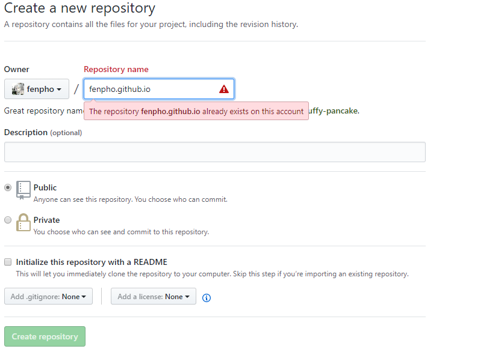
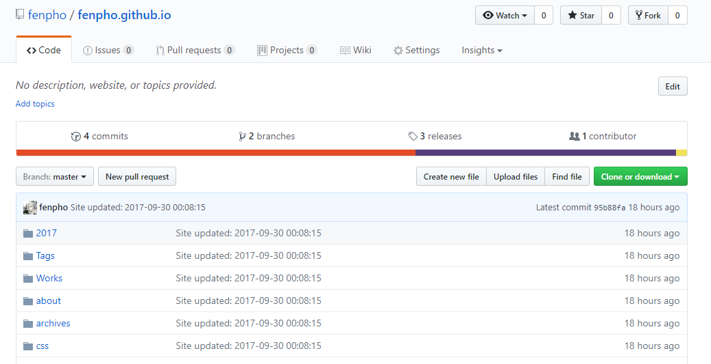
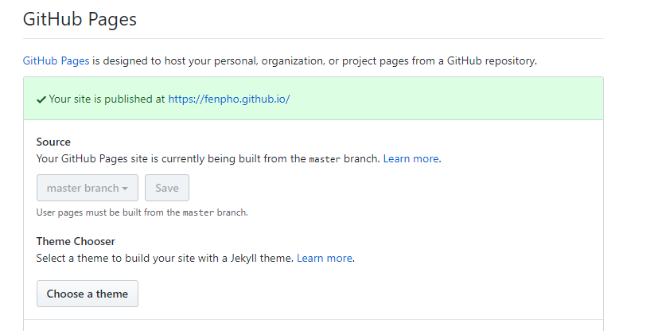
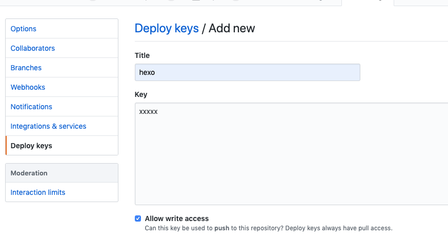

<!DOCTYPE HTML>
<html lang="zh-CN">
<head><meta name="generator" content="Hexo 3.8.0">
    <!--Setting-->
    <meta charset="UTF-8">
    <meta name="viewport" content="width=device-width, user-scalable=no, initial-scale=1.0, maximum-scale=1.0, minimum-scale=1.0">
    <meta http-equiv="X-UA-Compatible" content="IE=Edge,chrome=1">
    <meta http-equiv="Cache-Control" content="no-siteapp">
    <meta http-equiv="Cache-Control" content="no-transform">
    <meta name="renderer" content="webkit|ie-comp|ie-stand">
    <meta name="apple-mobile-web-app-capable" content="搞趣">
    <meta name="apple-mobile-web-app-status-bar-style" content="black">
    <meta name="format-detection" content="telephone=no,email=no,adress=no">
    <meta name="browsermode" content="application">
    <meta name="screen-orientation" content="portrait">
    <link rel="dns-prefetch" href="http://www.gao7app.com">
    <!--SEO-->

    <meta name="keywords" content="hexo GitHub">


    <meta name="description" content="
 1、什么是 Hexo？Hexo 是一个快速、简洁且高效的博客框架。Hexo 使用 Markdown（或其他渲染引擎）解析文章，在几秒内，即可利用靓丽的主题生成静态网页。2、准备工作

2.1...">


<meta name="robots" content="all">
<meta name="google" content="all">
<meta name="googlebot" content="all">
<meta name="verify" content="all">

    <!--Title-->


<title>hexo+GitHub | 搞趣</title>


    <link rel="alternate" href="/atom.xml" title="搞趣" type="application/atom+xml">


    <link rel="icon" href="/favicon.ico">

    


<link rel="stylesheet" href="/css/bootstrap.min.css?rev=3.3.7">
<link rel="stylesheet" href="/css/font-awesome.min.css?rev=4.5.0">
<link rel="stylesheet" href="/css/style.css?rev=@@hash">


    
	<div class="hide">
		<script type="text/javascript">
			var cnzz_protocol = (("https:" == document.location.protocol) ? " https://" : " http://");document.write(unescape("%3Cspan class='cnzz_stat_icon_1263868967 hide' %3E%3Cscript%20src%3D%22https%3A%2F%2Fs95.cnzz.com%2Fz_stat.php%3Fweb_id%3D1272564536%22%3E%3C%2Fscript%3E%3C/span%3E%3Cscript src='" + cnzz_protocol + "s19.cnzz.com/z_stat.php%3Fid%3D1263868967%26show%3Dpic1' type='text/javascript'%3E%3C/script%3E"));
		</script>
	</div>


    

    <script>
        (function(){
            var bp = document.createElement('script');
            var curProtocol = window.location.protocol.split(':')[0];
            if (curProtocol === 'https') {
                bp.src = 'https://zz.bdstatic.com/linksubmit/push.js';
            }
            else {
                bp.src = 'http://push.zhanzhang.baidu.com/push.js';
            }
            var s = document.getElementsByTagName("script")[0];
            s.parentNode.insertBefore(bp, s);
        })();
    </script>

</head>

</html>
<!--[if lte IE 8]>
<style>
    html{ font-size: 1em }
</style>
<![endif]-->
<!--[if lte IE 9]>
<div style="ie">你使用的浏览器版本过低，为了你更好的阅读体验，请更新浏览器的版本或者使用其他现代浏览器，比如Chrome、Firefox、Safari等。</div>
<![endif]-->

<body>
    <header class="main-header" style="background-image:url(/./img/banner6.jpg)">
    <div class="main-header-box">
        <a class="header-avatar" href="/" title="zj">
            
        </a>
        <div class="branding">
        	<!--<h2 class="text-hide">Snippet主题,从未如此简单有趣</h2>-->
            
                <h2> 越努力越幸运 </h2>
            
    	</div>
    </div>
</header>
    <nav class="main-navigation">
    <div class="container">
        <div class="row">
            <div class="col-sm-12">
                <div class="navbar-header"><span class="nav-toggle-button collapsed pull-right" data-toggle="collapse" data-target="#main-menu" id="mnav">
                    <span class="sr-only"></span>
                        <i class="fa fa-bars"></i>
                    </span>
                    <a class="navbar-brand" href="http://www.gao7app.com">搞趣</a>
                </div>
                <div class="collapse navbar-collapse" id="main-menu">
                    <ul class="menu">
                        
                            <li role="presentation" class="text-center">
                                <a href="/"><i class="fa "></i>首页</a>
                            </li>
                        
                            <li role="presentation" class="text-center">
                                <a href="/categories/运维/"><i class="fa "></i>运维</a>
                            </li>
                        
                            <li role="presentation" class="text-center">
                                <a href="/categories/数据库/"><i class="fa "></i>数据库</a>
                            </li>
                        
                            <li role="presentation" class="text-center">
                                <a href="/categories/自动化/"><i class="fa "></i>自动化</a>
                            </li>
                        
                            <li role="presentation" class="text-center">
                                <a href="/categories/工具/"><i class="fa "></i>工具</a>
                            </li>
                        
                            <li role="presentation" class="text-center">
                                <a href="/archives/"><i class="fa "></i>时间轴</a>
                            </li>
                        
                    </ul>
                </div>
            </div>
        </div>
    </div>
</nav>
    <section class="content-wrap">
        <div class="container">
            <div class="row">
                <main class="col-md-8 main-content m-post">
                    <p id="process"></p>
<article class="post">
    <div class="post-head">
        <h1 id="hexo+GitHub">
            
	            hexo+GitHub
            
        </h1>
        <div class="post-meta">
    
        <span class="categories-meta fa-wrap">
            <i class="fa fa-folder-open-o"></i>
            <a class="category-link" href="/categories/运维/">运维</a>
        </span>
    

    
        <span class="fa-wrap">
            <i class="fa fa-tags"></i>
            <span class="tags-meta">
                
                    <a class="tag-link" href="/tags/hexo-GitHub/">hexo GitHub</a>
                
            </span>
        </span>
    

    
        
        <span class="fa-wrap">
            <i class="fa fa-clock-o"></i>
            <span class="date-meta">2019/04/20</span>
        </span>
        
    
</div>
            
            
    </div>
    
    <div class="post-body post-content">
        <blockquote>
<p> 1、什么是 Hexo？<br>Hexo 是一个快速、简洁且高效的博客框架。Hexo 使用 Markdown（或其他渲染引擎）解析文章，在几秒内，即可利用靓丽的主题生成静态网页。<br>2、准备工作</p>
</blockquote>
<h4 id="2-1-部署环境"><a href="#2-1-部署环境" class="headerlink" title="2.1 部署环境"></a>2.1 部署环境</h4><ul>
<li>centos 7.5</li>
<li>hexo</li>
<li>nginx</li>
<li>github</li>
<li>git</li>
<li>cloudflare （cdn + 域名）</li>
</ul>
<h4 id="2-2-安装Git"><a href="#2-2-安装Git" class="headerlink" title="2.2 安装Git"></a>2.2 安装Git</h4><ul>
<li>Windows：下载并安装 git.</li>
<li><p>Mac：使用 Homebrew, MacPorts </p>
<figure class="highlight plain"><table><tr><td class="gutter"><pre><span class="line">1</span><br></pre></td><td class="code"><pre><span class="line">brew install git</span><br></pre></td></tr></table></figure>
</li>
<li><p>Linux (Ubuntu, Debian)：</p>
<figure class="highlight plain"><table><tr><td class="gutter"><pre><span class="line">1</span><br></pre></td><td class="code"><pre><span class="line">sudo apt-get install git-core</span><br></pre></td></tr></table></figure>
</li>
<li><p>Linux (Fedora, Red Hat,CentOS)：</p>
<figure class="highlight plain"><table><tr><td class="gutter"><pre><span class="line">1</span><br></pre></td><td class="code"><pre><span class="line">sudo yum install git-core</span><br></pre></td></tr></table></figure>
</li>
</ul>
<h4 id="2-3安装-Node-js"><a href="#2-3安装-Node-js" class="headerlink" title="2.3安装 Node.js"></a>2.3安装 Node.js</h4><p>安装 Node.js 的最佳方式是使用 nvm。<br>cURL:<br><figure class="highlight plain"><table><tr><td class="gutter"><pre><span class="line">1</span><br></pre></td><td class="code"><pre><span class="line">$ curl https://raw.github.com/creationix/nvm/master/install.sh | sh</span><br></pre></td></tr></table></figure></p>
<p>Wget:<br><figure class="highlight plain"><table><tr><td class="gutter"><pre><span class="line">1</span><br></pre></td><td class="code"><pre><span class="line">$ wget -qO- https://raw.github.com/creationix/nvm/master/install.sh | sh</span><br></pre></td></tr></table></figure></p>
<p>安装完成后，重启终端并执行下列命令即可安装 Node.js。<br><figure class="highlight plain"><table><tr><td class="gutter"><pre><span class="line">1</span><br></pre></td><td class="code"><pre><span class="line">$ nvm install stable</span><br></pre></td></tr></table></figure></p>
<p>或者您也可以下载 安装程序 来安装。</p>
<blockquote>
<p>3、安装hexo<br>执行以下命令:<br><figure class="highlight plain"><table><tr><td class="gutter"><pre><span class="line">1</span><br></pre></td><td class="code"><pre><span class="line">$ npm install -g hexo-cli</span><br></pre></td></tr></table></figure></p>
</blockquote>
<p>安装 Hexo 完成后，请执行下列命令，Hexo 将会在指定文件夹中新建所需要的文件。<br><figure class="highlight plain"><table><tr><td class="gutter"><pre><span class="line">1</span><br><span class="line">2</span><br><span class="line">3</span><br></pre></td><td class="code"><pre><span class="line">$ hexo init &lt;folder&gt;</span><br><span class="line">$ cd &lt;folder&gt;</span><br><span class="line">$ npm install</span><br></pre></td></tr></table></figure></p>
<p>新建完成后，指定文件夹的目录如下：<br><figure class="highlight plain"><table><tr><td class="gutter"><pre><span class="line">1</span><br><span class="line">2</span><br><span class="line">3</span><br><span class="line">4</span><br><span class="line">5</span><br><span class="line">6</span><br><span class="line">7</span><br></pre></td><td class="code"><pre><span class="line">├── _config.yml</span><br><span class="line">├── package.json</span><br><span class="line">├── scaffolds</span><br><span class="line">├── source</span><br><span class="line">| ├── _drafts</span><br><span class="line">| └── _posts</span><br><span class="line">└── themes</span><br></pre></td></tr></table></figure></p>
<p>接下来要做的就是修改配置文件了，在根目录下找到文件：_config.yml</p>
<p>安装自己的需要进行修改，一般修改下网站标题，作者就可以了<br><figure class="highlight plain"><table><tr><td class="gutter"><pre><span class="line">1</span><br><span class="line">2</span><br><span class="line">3</span><br><span class="line">4</span><br><span class="line">5</span><br><span class="line">6</span><br><span class="line">7</span><br><span class="line">8</span><br><span class="line">9</span><br><span class="line">10</span><br><span class="line">11</span><br><span class="line">12</span><br><span class="line">13</span><br></pre></td><td class="code"><pre><span class="line"># Site</span><br><span class="line">title: Fenpho  //网站标题</span><br><span class="line">subtitle: //网站副标题</span><br><span class="line">description://网站描述</span><br><span class="line">author: fenpho//网站作者</span><br><span class="line">language: zh-CN//语言</span><br><span class="line">timezone://时区</span><br><span class="line"></span><br><span class="line"># URL</span><br><span class="line">and root as &apos;/child/&apos;</span><br><span class="line">url: https://fenpho.github.io/ //网站链接</span><br><span class="line">root: /  //网站根目录</span><br><span class="line">permalink: :year/:month/:day/:title/ //时间格式</span><br></pre></td></tr></table></figure></p>
<p>具体的修改方法可以参考官网：Hexo</p>
<blockquote>
<p>4、本地预览</p>
</blockquote>
<p>生成静态文件<br><figure class="highlight plain"><table><tr><td class="gutter"><pre><span class="line">1</span><br><span class="line">2</span><br><span class="line">3</span><br></pre></td><td class="code"><pre><span class="line">$ hexo generate </span><br><span class="line">//也可以使用缩写 : </span><br><span class="line">$ hexo g</span><br></pre></td></tr></table></figure></p>
<p>启动服务器<br>默认情况下，访问网址为：<a href="http://localhost:4000/。" target="_blank" rel="noopener">http://localhost:4000/。</a><br><figure class="highlight plain"><table><tr><td class="gutter"><pre><span class="line">1</span><br></pre></td><td class="code"><pre><span class="line">$ hexo server</span><br></pre></td></tr></table></figure></p>
<p>运行网上面的命令后，打开浏览器输入<a href="http://localhost:4000/即可看到页面了，有木有很激动" target="_blank" rel="noopener">http://localhost:4000/即可看到页面了，有木有很激动</a></p>
<blockquote>
<p>5、选取主题<br><a href="&#39;https://hexo.io/themes/&#39;">hexo链接</a></p>
</blockquote>
<p>接下来你需要做进一步的网站美化工作，到官网去选取一个喜欢的主题吧！我采用了一个叫做TKL的主题：</p>
<h4 id="5-1-下载"><a href="#5-1-下载" class="headerlink" title="5.1 下载"></a>5.1 下载</h4><p>确定需要使用的主体之后，打开主题的官网下载安装主题即可：</p>
<p>运行如下命令（去主题的github页面找类似下面的命令）<br><figure class="highlight plain"><table><tr><td class="gutter"><pre><span class="line">1</span><br></pre></td><td class="code"><pre><span class="line">$ git clone https://github.com/shenliyang/hexo-theme-snippet.git</span><br></pre></td></tr></table></figure></p>
<p>命令中的后面的hexo-theme-snippet为存储的目录名字，可以随便修改</p>
<h4 id="5-2-更新"><a href="#5-2-更新" class="headerlink" title="5.2 更新"></a>5.2 更新</h4><p>更新主题相关文件<br><figure class="highlight plain"><table><tr><td class="gutter"><pre><span class="line">1</span><br><span class="line">2</span><br></pre></td><td class="code"><pre><span class="line">cd themes/hexo-theme-snippet</span><br><span class="line">git pull</span><br></pre></td></tr></table></figure></p>
<h4 id="5-3-使用"><a href="#5-3-使用" class="headerlink" title="5.3 使用"></a>5.3 使用</h4><p>修改根目录下的博客配置文件 _config.yml （不是主题下面的配置文件）</p>
<p>主题属性 theme 为 hexo-theme-snippet.<br>配置主题，这个需要根据不同主题的说明来配置，也可以不配置</p>
<p>好了，主题安装好了，此时需要使用如下命令：<br><figure class="highlight plain"><table><tr><td class="gutter"><pre><span class="line">1</span><br><span class="line">2</span><br></pre></td><td class="code"><pre><span class="line">hexo clean &amp;&amp; hexo g</span><br><span class="line">hexo server</span><br></pre></td></tr></table></figure></p>
<p>完成后刷新页面看一下吧</p>
<blockquote>
<p>6、添加文章<br>创建一条博文，运行下面的命令，或者直接新建一个Markdown文件，新建文件需要手动添加文章头部（注意目录source/_posts）<br><figure class="highlight plain"><table><tr><td class="gutter"><pre><span class="line">1</span><br></pre></td><td class="code"><pre><span class="line">hexo new &quot;your-post-name&quot;</span><br></pre></td></tr></table></figure></p>
</blockquote>
<p>如果想要在新建的同时生成对应的文件夹，用于存放文档的资源文件，如图片，音视频等：将配置文件中的post_asset_folder的值从false改为true即可<br><figure class="highlight plain"><table><tr><td class="gutter"><pre><span class="line">1</span><br></pre></td><td class="code"><pre><span class="line">post_asset_folder: true</span><br></pre></td></tr></table></figure></p>
<blockquote>
<p>7、文章分类</p>
</blockquote>
<h4 id="7-1-categories"><a href="#7-1-categories" class="headerlink" title="7.1 categories"></a>7.1 categories</h4><p>在根目录下scaffolds/post.md中，添加一行categories:（同理可应用在page.md和photo.md）<br><figure class="highlight plain"><table><tr><td class="gutter"><pre><span class="line">1</span><br><span class="line">2</span><br><span class="line">3</span><br><span class="line">4</span><br><span class="line">5</span><br><span class="line">6</span><br></pre></td><td class="code"><pre><span class="line">---</span><br><span class="line">title: &#123;&#123; title &#125;&#125;</span><br><span class="line">date: &#123;&#123; date &#125;&#125;</span><br><span class="line">categories: &apos;工具&apos;</span><br><span class="line">top：100</span><br><span class="line">---</span><br></pre></td></tr></table></figure></p>
<h4 id="7-2-tags"><a href="#7-2-tags" class="headerlink" title="7.2 tags"></a>7.2 tags</h4><p>在文章的开头配置<br><figure class="highlight plain"><table><tr><td class="gutter"><pre><span class="line">1</span><br><span class="line">2</span><br><span class="line">3</span><br><span class="line">4</span><br><span class="line">5</span><br><span class="line">6</span><br><span class="line">7</span><br><span class="line">8</span><br><span class="line">9</span><br><span class="line">10</span><br><span class="line">11</span><br></pre></td><td class="code"><pre><span class="line">---</span><br><span class="line">layout: post</span><br><span class="line">title: 标题</span><br><span class="line">date: 2017-05-26 09:00</span><br><span class="line">author: &quot;zj&quot;</span><br><span class="line">categories: &apos;工具&apos;</span><br><span class="line">    - 目录名字 </span><br><span class="line">tags:</span><br><span class="line">    - 标签1</span><br><span class="line">    - 标签2</span><br><span class="line">---</span><br></pre></td></tr></table></figure></p>
<h4 id="7-3-归档展示样式"><a href="#7-3-归档展示样式" class="headerlink" title="7.3 归档展示样式"></a>7.3 归档展示样式</h4><p>配置博客首页归档展示样式。修改主题的配置文件themes目录下对应的主题下面的_config.yml中:<br><figure class="highlight plain"><table><tr><td class="gutter"><pre><span class="line">1</span><br><span class="line">2</span><br><span class="line">3</span><br><span class="line">4</span><br><span class="line">5</span><br><span class="line">6</span><br></pre></td><td class="code"><pre><span class="line"># 博客首页展示文本/访问路径/自定义归档名称</span><br><span class="line">menu:</span><br><span class="line">  home: /</span><br><span class="line">  essay: /categories/随笔     </span><br><span class="line">  write: /categories/写作     </span><br><span class="line">  about: /about</span><br></pre></td></tr></table></figure></p>
<blockquote>
<p>8、添加文章置顶功能<br>原理：在Hexo生成首页HTML时，将top值高的文章排在前面，达到置顶功能。修改Hexo文件夹下的node_modules/hexo-generator-index/lib/generator.js，在生成文章之前进行文章top值排序。</p>
</blockquote>
<p>以下是最终的generator.js<br><figure class="highlight plain"><table><tr><td class="gutter"><pre><span class="line">1</span><br><span class="line">2</span><br><span class="line">3</span><br><span class="line">4</span><br><span class="line">5</span><br><span class="line">6</span><br><span class="line">7</span><br><span class="line">8</span><br><span class="line">9</span><br><span class="line">10</span><br><span class="line">11</span><br><span class="line">12</span><br><span class="line">13</span><br><span class="line">14</span><br><span class="line">15</span><br><span class="line">16</span><br><span class="line">17</span><br><span class="line">18</span><br><span class="line">19</span><br><span class="line">20</span><br><span class="line">21</span><br><span class="line">22</span><br><span class="line">23</span><br><span class="line">24</span><br><span class="line">25</span><br><span class="line">26</span><br><span class="line">27</span><br><span class="line">28</span><br></pre></td><td class="code"><pre><span class="line">&apos;use strict&apos;;</span><br><span class="line">var pagination = require(&apos;hexo-pagination&apos;);</span><br><span class="line">module.exports = function(locals)&#123;</span><br><span class="line">  var config = this.config;</span><br><span class="line">  var posts = locals.posts;</span><br><span class="line">    posts.data = posts.data.sort(function(a, b) &#123;</span><br><span class="line">        if(a.top &amp;&amp; b.top) &#123;</span><br><span class="line">            if(a.top == b.top) return b.date - a.date;</span><br><span class="line">            else return b.top - a.top;</span><br><span class="line">        &#125;</span><br><span class="line">        else if(a.top &amp;&amp; !b.top) &#123;</span><br><span class="line">            return -1;</span><br><span class="line">        &#125;</span><br><span class="line">        else if(!a.top &amp;&amp; b.top) &#123;</span><br><span class="line">            return 1;</span><br><span class="line">        &#125;</span><br><span class="line">        else return b.date - a.date;</span><br><span class="line">    &#125;);</span><br><span class="line">  var paginationDir = config.pagination_dir || &apos;page&apos;;</span><br><span class="line">  return pagination(&apos;&apos;, posts, &#123;</span><br><span class="line">    perPage: config.index_generator.per_page,</span><br><span class="line">    layout: [&apos;index&apos;, &apos;archive&apos;],</span><br><span class="line">    format: paginationDir + &apos;/%d/&apos;,</span><br><span class="line">    data: &#123;</span><br><span class="line">      __index: true</span><br><span class="line">    &#125;</span><br><span class="line">  &#125;);</span><br><span class="line">&#125;;</span><br></pre></td></tr></table></figure></p>
<h3 id="9、部署到GitHub"><a href="#9、部署到GitHub" class="headerlink" title="9、部署到GitHub"></a>9、部署到GitHub</h3><h4 id="9-1-在-GitHub-上的操作"><a href="#9-1-在-GitHub-上的操作" class="headerlink" title="9.1 在 GitHub 上的操作"></a>9.1 在 GitHub 上的操作</h4><p>新建一个 Repository<br>在 Repository name 下填写 yourname.github.io,Description (optional) 下填写一些简单的描述（不写也没有关系），如图所示：<br><br>创建成功之后，进入仓库的设置（点击setting）界面如下图所示：<br><br>找到pages选项，选择master branch作为主页<br><br>简单两步 yourname.github.io 这个域名就配置成功了。</p>
<p>创建key</p>
<p>服务器上生成key<br><figure class="highlight plain"><table><tr><td class="gutter"><pre><span class="line">1</span><br><span class="line">2</span><br><span class="line">3</span><br><span class="line">4</span><br></pre></td><td class="code"><pre><span class="line"></span><br><span class="line">ssh-keygen -t rsa -C &quot;xxx@qq.com&quot;</span><br><span class="line"></span><br><span class="line">cat /root/.ssh/id_rsa.pub</span><br></pre></td></tr></table></figure></p>
<p>把上面cat 的key 添加 github 位置 settings deploy-keys</p>
<p>注意上传的权限要给<br> </p>
<p>测试<br><figure class="highlight plain"><table><tr><td class="gutter"><pre><span class="line">1</span><br></pre></td><td class="code"><pre><span class="line">ssh -T git@github.com</span><br></pre></td></tr></table></figure></p>
<p>Ok<br><figure class="highlight plain"><table><tr><td class="gutter"><pre><span class="line">1</span><br></pre></td><td class="code"><pre><span class="line">Hi xxxx! You ve successfully authenticated, but GitHub does not provide shell access.</span><br></pre></td></tr></table></figure></p>
<h4 id="9-2、本地操作"><a href="#9-2、本地操作" class="headerlink" title="9.2、本地操作"></a>9.2、本地操作</h4><p>为 Hexo 安装 Git 插件<br>安装 hexo-deployer-git，否则会报 ERROR Deployer not found: git 的错误。<br><figure class="highlight plain"><table><tr><td class="gutter"><pre><span class="line">1</span><br></pre></td><td class="code"><pre><span class="line">npm install hexo-deployer-git --save</span><br></pre></td></tr></table></figure></p>
<p>修改你的 _config.yml 配置文件，在结尾处加上如下内容：<br><figure class="highlight plain"><table><tr><td class="gutter"><pre><span class="line">1</span><br><span class="line">2</span><br><span class="line">3</span><br><span class="line">4</span><br><span class="line">5</span><br><span class="line">6</span><br></pre></td><td class="code"><pre><span class="line"># Deployment</span><br><span class="line">## Docs: https://hexo.io/docs/deployment.html</span><br><span class="line">deploy:</span><br><span class="line">  type: git</span><br><span class="line">  repo: git@github.com:fenpho/fenpho.github.io.git</span><br><span class="line">  branch: master</span><br></pre></td></tr></table></figure></p>
<p>注意repo中的地址为你自己新建的仓库的路径</p>
<p>生成静态文件和部署：<br><figure class="highlight plain"><table><tr><td class="gutter"><pre><span class="line">1</span><br></pre></td><td class="code"><pre><span class="line">hexo g &amp; d</span><br></pre></td></tr></table></figure></p>
<p>最后出现如下提示就代表成功啦！<br>INFO Deploy done: git</p>

    </div>
    
        <div class="reward" ontouchstart>
    <div class="reward-wrap">赏
        <div class="reward-box">
            
            
                <span class="reward-type">
                    <b>微信打赏</b>
                </span>
            
        </div>
    </div>
    <p class="reward-tip">赞赏是不耍流氓的鼓励</p>
</div>


    
    <div class="post-footer">
        <div>
            
                转载声明：商业转载请联系作者获得授权,非商业转载请注明出处 © <a href target="_blank">Snippet</a>
            
        </div>
        <div>
            
        </div>
    </div>
</article>

<div class="article-nav prev-next-wrap clearfix">
    
    
        <a href="/Charles.html" class="next-post btn btn-default" title="Charles">
            <span class="hidden-lg">下一篇</span>
            <span class="hidden-xs">Charles</span><i class="fa fa-angle-right fa-fw"></i>
        </a>
    
</div>


    <div id="comments">
        
	
    <div id="vcomments" class="valine"></div>
    <script src="//cdn1.lncld.net/static/js/3.0.4/av-min.js"></script>
<script src="/assets/valine.min.js"></script>

    <script>
        new Valine({
            av: AV,
            el: '#vcomments',
            appId: 'xFcujt6m2KQvPvjBxRVRiD6R-gzGzoHsz',
            appKey: 'wn426D29iJpKjYczYLBPPCiP',
            placeholder: '说点什么吧',
            notify: false,
            verify: false,
            avatar: 'mm',
            meta: 'nick,mail'.split(','),
            pageSize: '10',
            path: window.location.pathname,
            lang: 'zh-CN'.toLowerCase()
        })
    </script>


    </div>


                </main>
                
                    <aside id="article-toc" role="navigation" class="col-md-4">
    <div class="widget">
        <h3 class="title">文章目录</h3>
        
            <ol class="toc"><li class="toc-item toc-level-4"><a class="toc-link" href="#2-1-部署环境"><span class="toc-text">2.1 部署环境</span></a></li><li class="toc-item toc-level-4"><a class="toc-link" href="#2-2-安装Git"><span class="toc-text">2.2 安装Git</span></a></li><li class="toc-item toc-level-4"><a class="toc-link" href="#2-3安装-Node-js"><span class="toc-text">2.3安装 Node.js</span></a></li><li class="toc-item toc-level-4"><a class="toc-link" href="#5-1-下载"><span class="toc-text">5.1 下载</span></a></li><li class="toc-item toc-level-4"><a class="toc-link" href="#5-2-更新"><span class="toc-text">5.2 更新</span></a></li><li class="toc-item toc-level-4"><a class="toc-link" href="#5-3-使用"><span class="toc-text">5.3 使用</span></a></li><li class="toc-item toc-level-4"><a class="toc-link" href="#7-1-categories"><span class="toc-text">7.1 categories</span></a></li><li class="toc-item toc-level-4"><a class="toc-link" href="#7-2-tags"><span class="toc-text">7.2 tags</span></a></li><li class="toc-item toc-level-4"><a class="toc-link" href="#7-3-归档展示样式"><span class="toc-text">7.3 归档展示样式</span></a></li></ol><li class="toc-item toc-level-3"><a class="toc-link" href="#9、部署到GitHub"><span class="toc-text">9、部署到GitHub</span></a><ol class="toc-child"><li class="toc-item toc-level-4"><a class="toc-link" href="#9-1-在-GitHub-上的操作"><span class="toc-text">9.1 在 GitHub 上的操作</span></a></li><li class="toc-item toc-level-4"><a class="toc-link" href="#9-2、本地操作"><span class="toc-text">9.2、本地操作</span></a></li></ol>
        
    </li></div>
</aside>

                
            </div>
        </div>
    </section>
    <footer class="main-footer">
    <div class="container">
        <div class="row">
        </div>
    </div>
</footer>

<a id="back-to-top" class="icon-btn hide">
	<i class="fa fa-chevron-up"></i>
</a>


    <div class="copyright">
    <div class="container">
        <div class="row">
            <div class="col-sm-12">
                <div class="busuanzi">
    
</div>

            </div>
            <div class="col-sm-12">
                <span>Copyright &copy; 2019
                </span> |
                <span>
                    Powered by <a href="//hexo.io" class="copyright-links" target="_blank" rel="nofollow">Hexo</a>
                </span> |
                <span>
                    Theme by <a href="//github.com/shenliyang/hexo-theme-snippet.git" class="copyright-links" target="_blank" rel="nofollow">Snippet</a>
                </span>
            </div>
        </div>
    </div>
</div>


<script src="/js/app.js?rev=@@hash"></script>

</body>
</html>